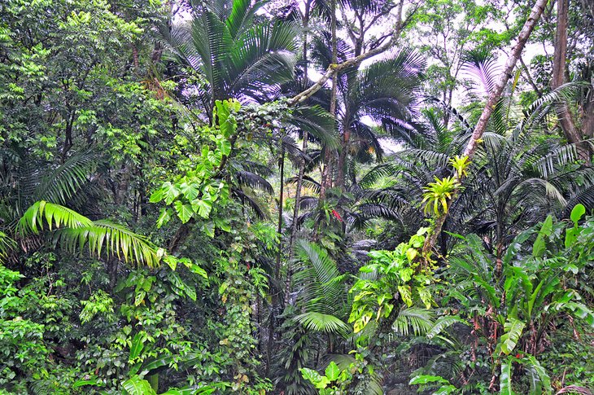

2
Main Ridge Forest Reserve, Tobago
Rich in biodiversity, the Main Ridge Forest Reserve is purportedly the oldest legally protected forest in the Western Hemisphere. The reserve harbors more than half the island's bird species, including the blue-backed manakin, collared trogon, and many species of hummingbirds - the rare white-tailed sabrewing hummingbird is also a resident here.Hiking through the lush foliage, you can also spot frogs, lizards, snakes, and butterflies. The road through the reserve from north to south, near the eastern end of Tobago, is one of the more scenic ways to see the forest. At the top of the ridge are hiking trails and freelance guides.